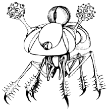

NEW INVID EXPERIMENTS
(Cyborgs and Inorganics)
When the Regis sent the stage 6 Invid to Earth she gave them instructions to hold the planet at ANY cost, ensuring that the vital supplies of the Flower of Life continued to flow to New Optera until the new home of the Invid became self sufficient. This gave the Leader Invid considerable latitude, and as the war continued they began to exploit this freedom to come up with crueler and more elaborate strategies. At first the stage 6 Invid worked together, completely reworking the tactics and mecha of their forces, but as time continued they began to diverge and explore different ways to augment their personal forces. This led to the development of a number of test weapons by various stage 6 Invid, which were deployed within their domains for field testing. Some designs proved inadequate and were quickly withdrawn from service, while others were extremely effective and were eventually distributed all over the Earth.
A large concern among the stage 6 Invid was to find a way to augment their limited forces. Although the numbers of Invid on Earth during the Third Invid War were higher than initially estimated by resistance fighters (around 5 million compared to early estimates of 2 million), Invid forces were still spread fairly thin in some areas, especially considering the enormous amounts of troops it took to operate the orbiting Invid Space Hives. In order to ensure their domination of Earth and prevent interference with their mission, the stage 6 Invid needed new soldiers to supplement their own forces on the Earth.
Independent stage 6 Invid came up with three different approaches to solving this problem. The first was to actively recruit humans to work for the Invid in securing their planet. The stage 6 Invid discovered that they could quickly build up an army of followers with promises of supplies and preferential treatment, and that humans made very effective troops for maintaining order in towns and managing slave camps. The Invid never really trusted the humans working for them, however, and so always kept a wary eye on them and used them only in positions of low importance.
 Other stage 6 Invid tried to ressurect the Inorganic technology used by the Regent during the First Invid War on Tirol and the Sentinels worlds. In some ways Inorganics were ideal for the type of warfare being conducted on Earth; remote units that could be sent out into the field for weeks or months (or years) at a time and wander around the countryside searching for resistance fighters. Inorganics were also used as heavy combat units, supplementing the Combat Troopers as the first line of Invid offense. The stage 6 Invid did improve on the technology, however. Unlike the Regent's mecha, the new Inorganics were completely independent and did not rely on Invid brains for direction and animation. Also, the Inorganics were designed and armed more for special-purpose missions rather than the older general-purpose Scrimm, Crann, and Odeon, which tried to fulfill a number of roles and were successful in none.
Other stage 6 Invid moved along a darker path. They realized that in a sense they were literally sitting on top of a possible home-grown army; humanity itself. The Regis had for a time experimented in biological and cybernetic augmentation of humans, and the stage 6 Invid reopened that research with the goal of turning humans into useful tools for their purposes. Some Invid tried to use cybernetic humans discreetly as spies or saboteurs, while others tried to turn them into unfeeling workers or monstrous killing machines that could be used as disposable troops. Fortunately the cybernetic experiments were never widely distributed before the Third Invid War ended, but where they were used they caused widespread havoc among terran resistance forces. Had the Third Invid War continued for a few more years humanity may have found itself in a civil war against helpless victim of the stage 6 Invid's cruelty.


 |
http://www.mcs.net/~deitrich/index.html deitrich@mcs.net |
Last Updated: |